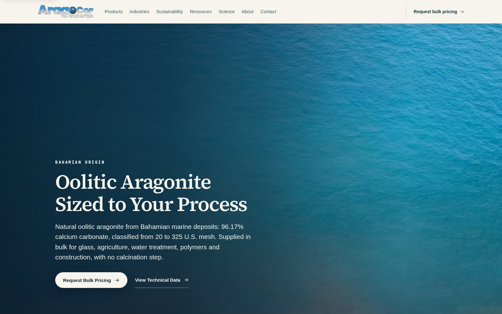
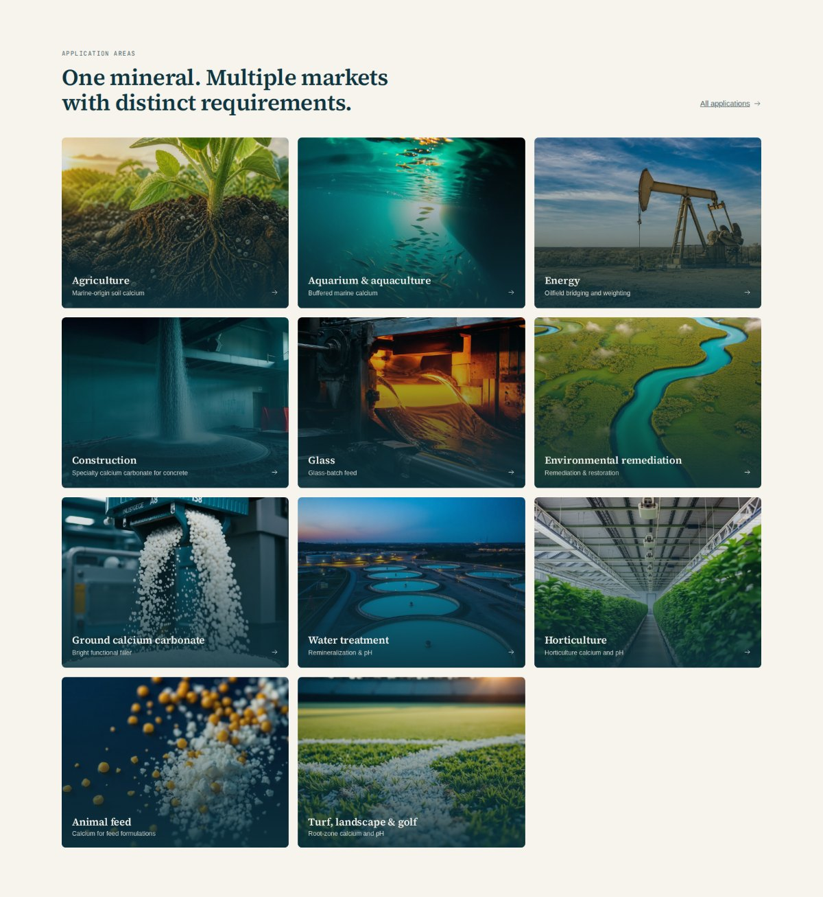
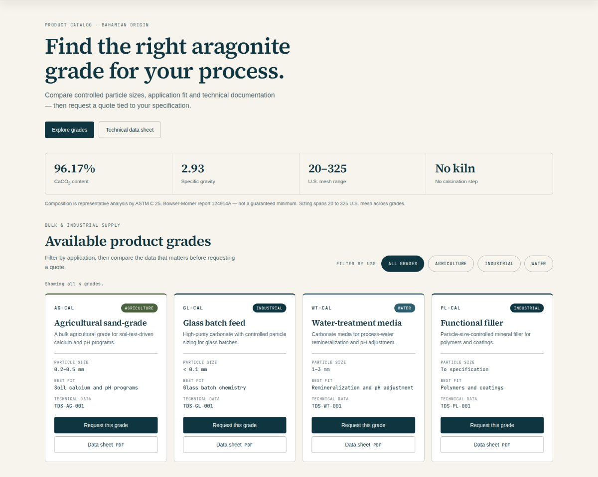

AragoCor Minerals
A marketing site for an industrial mineral supplier selling one product into five technical markets, and the AI sourcing tool that turns visitors into quote requests.
- Client
- AragoCor Minerals, supplier of Bahamian oolitic aragonite
- Sector
- Industrial minerals, business-to-business
- Scope
- Website design and build, technical copy, AI catalog, freight calculator and quote-request tool
- Year
- 2026
- Status
- Site live at aragocorminerals.com; sourcing tool in staged rollout

At a glance
- served from one product line, without the site fragmenting into five
- 5 markets
- each labelled with the particle sizing a buyer checks first
- 4 grades
- live AI with an offline engine behind it, so the tool degrades instead of failing
- 2 answer paths
- “Request bulk pricing” in the header of every page
- 1 action
The situation
AragoCor supplies Bahamian oolitic aragonite into five very different markets: agriculture, glass, water treatment, polymers and construction. Same mineral, five buyers who care about entirely different things. A soil agronomist and a glass batch engineer share almost no vocabulary.
Most industrial supplier sites solve this by going vague — a stock photo, "quality solutions for your needs," and a contact form. That loses the technical buyer, who is scanning for one thing: does this material meet my spec?
The site needed to be specific enough to satisfy an engineer and organized enough that five audiences could each find their own room.
Constraints
The buyer is technical and skeptical, so vague claims actively lose the sale. Five application areas had to be served from one product line without the site fragmenting into five sites. And anything added later — including the sourcing tool — had to drop onto the finished site without a rebuild.
What I built
A structure organized around the buyer, not the org chart. Products are graded by process — AG-CAL, GL-CAL, WT-CAL, PL-CAL — each carrying the particle sizing a buyer actually checks for: 0.2–0.5 mm, under 0.1 mm, 1–3 mm. Industries gets its own path for buyers who don't yet know which grade they need. Science holds the technical depth and the downloadable data sheet, available without cluttering the sales route.

Copy with numbers in it. 96–98% CaCO₃. Classified 20 to 325 U.S. mesh. No calcination step. OMRI listed for organic production. The sourcing process written out in five plain stages, ooid bank to dock, naming the supply chain rather than gesturing at it. Writing this required understanding the material, not just restyling a brief.

A visual system that stays credible. Marine photography from where the mineral forms, editorial serif headlines, generous whitespace. Restrained enough to read as a serious industrial supplier rather than a startup.
Conversion built into the frame. "Request bulk pricing" sits in the header on every page — the single action the site exists to drive.
Then: the sourcing tool
The site answered what AragoCor sells. Buyers still stalled on the next question — what it costs to move a container from origin to their port — and every one of those went to a salesperson, who spent the day re-answering the basics.
So I built a second layer: a searchable mineral catalog, a maritime freight and stowage calculator that returns real shipping figures, and RFQ capture that routes to sales with the conversation already attached, so the first human reply can be an actual quote. It runs on live AI with an offline knowledge engine behind it, so it degrades instead of failing when a provider is unreachable. It deploys as a floating widget on the existing site — no rebuild.
Decisions and tradeoffs
Specificity over polish. Mesh sizes and CaCO₃ percentages in the hero, not "premium quality minerals." That narrows the audience and converts the part of it that matters.
A second answer path, at a cost. Building the offline fallback took real time up front. It also means a sales tool that stays up when a third-party API doesn't — a fair trade for something sitting on the revenue path.
Standalone before embedded. The tool went live on its own URL first, so the freight logic could be tested against real use before appearing in front of existing customers.
Calculator over chatbot. The AI is the interface; the freight number is the product. Plenty of tools will chat with a buyer. Far fewer give them a number they can act on.
Where it stands
The site is live at aragocorminerals.com, instrumented from launch with privacy-friendly analytics and conversion events on the quote path — so the question of what's working is answered with data rather than opinion. The sourcing tool is running on its own URL in staged rollout, with freight logic being validated against real inquiries ahead of embedding it on the main site.